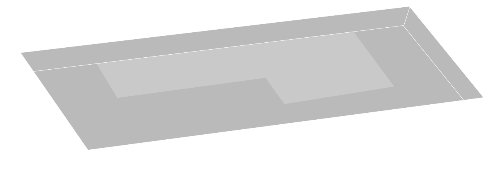
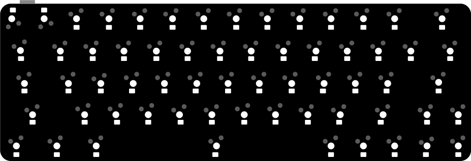
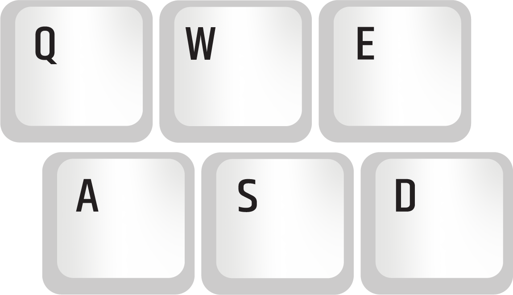
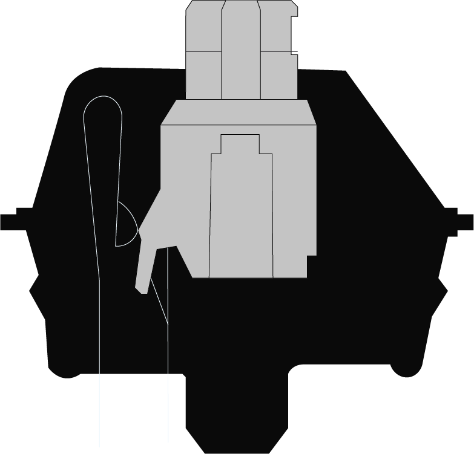
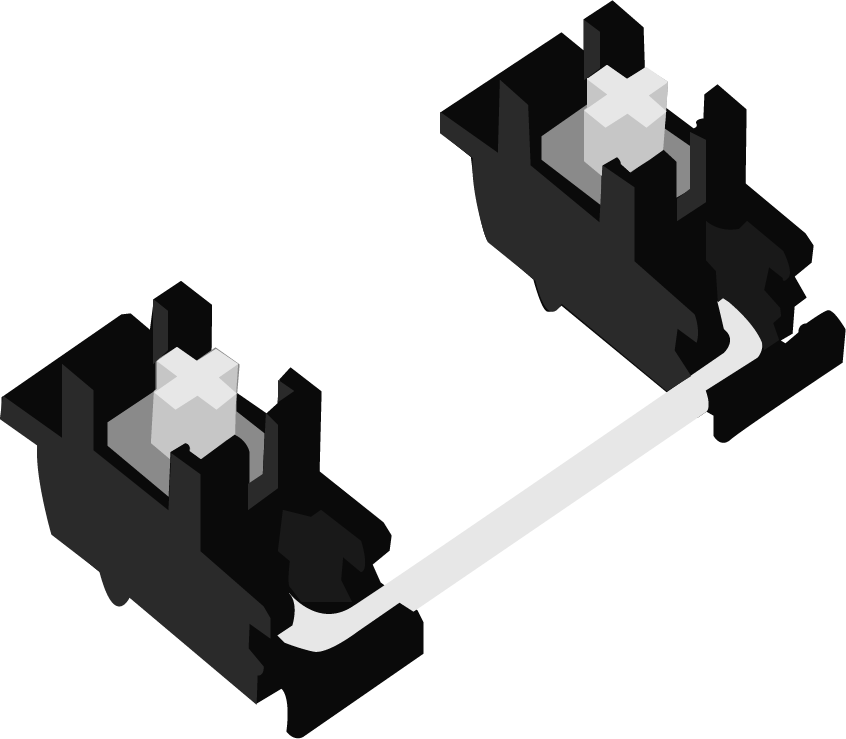

THE ANATOMY OF A CUSTOM
MECHANICAL KEYBOARD






CASE
The case is what holds all the parts of the keyboard together. It is commonly made from plastic, aluminum, acrylic, or wood. It comes in a variety of different sizes and layouts.
PCB
The pcb, aka printed circuit board, registers the keystrokes of the switches and sends signals to the computer or device. The two main types of pcbs are soldered and hotswap.
PLATE
The plate provides stability and holds the switches in place. It is commonly made out of aluminum, brass, or polycarbonate. Each material contributes to the feel and sound of the keyboard.
KEYCAPS
The keycaps are the plastic caps that cover each key switch. They come in different materials, colors, sizes, and profiles. The three most common materials are ABS, PBT, and POM. This part makes up most of the aesthetics of the keyboard.
SWITCHES
The switches regulate key presses. They determine the feel and sound of the keyboard. The three main types include clicky, tactile, and linear.
STABILIZERS
The stabilizers are placed under large keycaps such as the spacebar, enter, shift, backspace, and tab keys. It holds them in place and prevents wobbling.
ABOUT
I created this website to showcase one of my favorite hobbies: building custom mechanical keyboards! Click on each image to learn more about the different parts that make up a mechanical keyboard.
ABOUT